En esta lección se explica la Instalación y el uso de XAMPP en Windows 7/10. Las capturas corresponden a la instalación de XAMPP 7.1.8 en Windows 10.
Instalar XAMPP en Windows 7/10
Antes de instalar un servidor de páginas web es conveniente comprobar si no hay ya uno instalado, o al menos si no está en funcionamiento. Para ello, es suficiente con abrir el navegador y escribir la dirección http://localhost. Si se obtiene un mensaje de error es que no hay ningún servidor de páginas web en funcionamiento (podría haber algún servidor instalado, pero no estar en funcionamiento).

Una vez obtenido el archivo de instalación de XAMPP, hay que hacer doble clic sobre él para ponerlo en marcha. Al poner en marcha el instalador XAMPP nos muestra un aviso que aparece si está activado el Control de Cuentas de Usuario y recuerda que algunos directorios tienen permisos restringidos:

A continuación se inicia el asistente de instalación. Para continuar, haga clic en el botón "Next".

Los componentes mínimos que instala XAMPP son el servidor Apache y el lenguaje PHP, pero XAMPP también instala otros elementos. En la pantalla de selección de componentes puede elegir la instalación o no de estos componentes. Para seguir estos apuntes se necesita al menos instalar MySQL y phpMyAdmin.

En la siguiente pantalla puede elegir la carpeta de instalación de XAMPP. La carpeta de instalación predeterminada es C:\xampp. Si quiere cambiarla, haga clic en el icono de carpeta y seleccione la carpeta donde quiere instalar XAMPP. Para continuar la configuración de la instalación, haga clic en el botón "Next".
La siguiente pantalla ofrece información sobre los instaladores de aplicaciones para XAMPP creados por Bitnami. Haga clic en en el botón "Next" para continuar. Si deja marcada la casilla, se abrirá una página web de Bitnami en el navegador.
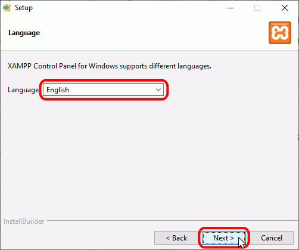
Una vez elegidas las opciones de instalación en las pantallas anteriores, esta pantalla es la pantalla de confirmación de la instalación. Haga clic en en el botón "Next" para comenzar la instalación en el disco duro.
El proceso de copia de archivos puede durar unos minutos.

Durante la instalación, si en el ordenador no se había instalado Apache anteriormente, en algún momento se mostrará un aviso del cortafuegos de Windows para autorizar a Apache a comunicarse en las redes privadas o públicas. Una vez elegidas las opciones deseadas (en estos apuntes se recomienda permitir las redes privadas y denegar las redes públicas), haga clic en el botón "Permitir acceso".
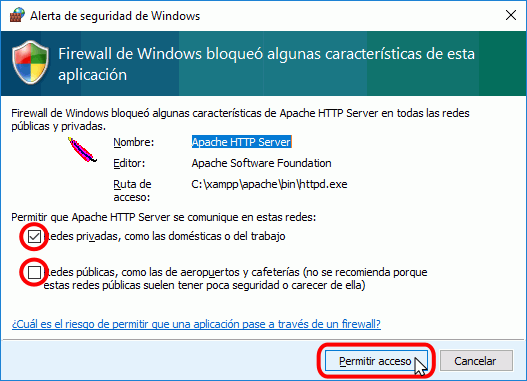
Una vez terminada la copia de archivos, la pantalla final confirma que XAMPP ha sido instalado. Si se deja marcada la casilla, se abrirá el panel de control de XAMPP. Para cerrar el programa de instalación, haga clic en el botón "Finish".

El Panel de Control de XAMPP
Abrir y cerrar el panel de control
Al panel de control de XAMPP se puede acceder mediante el menú de inicio "Todos los programas > XAMPP > XAMPP Control Panel" o, si ya está iniciado, mediante el icono del área de notificación.
La primera vez que se abe el panel de control de XAMPP, se muestra una ventana de selección de idioma que permite elegir entre inglés y alemán.
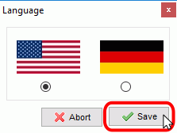
El panel de control de XAMPP se divide en tres zonas:
- la zona de módulos, que indica para cada uno de los módulos de XAMPP: si está instalado como servicio, su nombre, el identificador de proceso, el puerto utilizado e incluye unos botones para iniciar y detener los procesos, administrarlos, editar los archivos de configuración y abrir los archivos de registro de actividad.
- la zona de notificación, en la que XAMPP informa del éxito o fracaso de las acciones realizadas
- la zona de utilidades, para acceder rápidamente
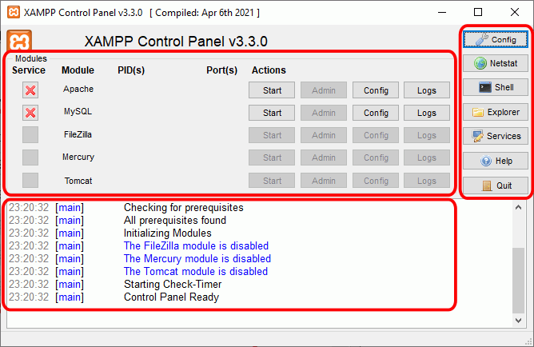
Para cerrar el panel de control de XAMPP hay que hacer clic en el botón Quit (al cerrar el panel de control no se detienen los servidores):

El botón Cerrar en forma de aspa no cierra realmente el panel de control, sólo lo minimiza:

Si se ha minimizado el panel de control de XAMPP, se puede volver a mostrar haciendo doble clic en el icono de XAMPP del área de notificación.

Haciendo clic derecho en el icono de XAMPP del área de notificación se muestra un menú que permite mostrar u ocultar el panel de control, arrancar o detener servidores o cerrar el panel de control.
Se pueden abrir varios paneles de control simultáneamente y cualquiera de ellos puede iniciar o detener los servidores, pero no es aconsejable hacerlo ya que puede dar lugar a confusiones (por ejemplo, al detener un servidor desde un panel de control los otros paneles de control interpretan la detención como un fallo inesperado y muestran un mensaje de error).
Iniciar servidores
Para poner en funcionamiento Apache (u otro servidor), hay que hacer clic en el botón "Start" correspondiente:

Si el arranque de Apache tiene éxito, el panel de control mostrará el nombre del módulo con fondo verde, su identificador de proceso, los puertos abiertos (http y https), el botón "Start" se convertirá en un botón "Stop" y en la zona de notificación se verá el resultado de las operaciones realizadas.

Detener servidores
Para detener Apache (u otro servidor), hay que hacer clic en el botón "Stop" correspondiente a Apache.
Si la parada de Apache tiene éxito, el panel de control mostrará el nombre del módulo con fondo gris, sin identificador de proceso ni puertos abiertos (http y https), el botón "Stop" se convertirá en un botón "Start" y en la zona de notificación se verá el resultado de las operaciones realizadas.
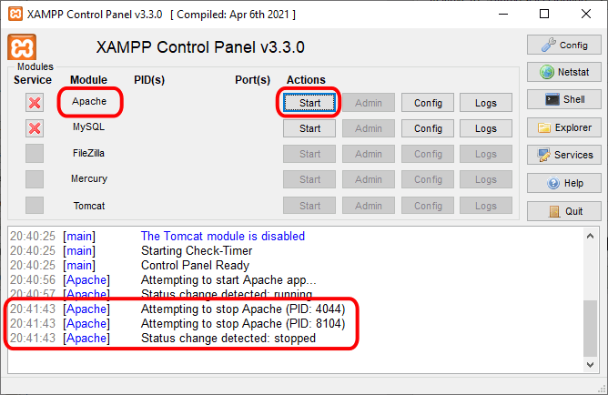
Para reiniciar de nuevo Apache habría que volver a hace clic en el botón "Start" correspondiente a Apache.
Nota:
- A veces es necesario detener y reiniciar los servidores. Por ejemplo, los archivos de configuración de Apache se cargan al iniciar Apache. Si se modifica un archivo de configuración de Apache (httpd.conf, php.ini u otro) mientras Apache está en marcha, para recargar los archivos de configuración es necesario detener y reiniciar el servidor Apache.
- Si al modificar el archivo de configuración hemos introducido errores, el servidor no será capaz de iniciarse. Si no sabemos encontrar el origen del problema, se recomienda restaurar los archivos de configuración originales, de los que se aconseja tener una copia de seguridad.
Editar archivos de configuración de Apache o PHP
Los dos archivos principales de configuración son los archivos httpd.conf (Apache) y php.ini (PHP). Para editarlos se puede utilizar el panel de control de XAMPP, que los abre directamente en el bloc de notas. Para ello hay que hacer clic en el botón "Config" correspondiente a Apache y hacer clic en el archivo que se quiere editar.


El la lección Configuración de Apache y PHP se comentan algunas opciones de configuración importantes.
El cortafuegos de Windows
Cuando se pone en marcha por primera vez cualquiera de los servidores que instala XAMPP, el cortafuegos de Windows pide al usuario confirmación de la autorización.
Por ejemplo, la primera vez que se pone en marcha Apache mediante el botón Start correspondiente ...
... como Apache abre puertos en el ordenador (por primera vez), el cortafuegos de Windows pide al usuario confirmación. Para poder utilizarlo hace falta al menos autorizar el acceso en redes privadas:

Si el arranque de Apache tiene éxito, el panel de control mostrará el nombre del módulo con fondo verde, su identificador de proceso, los puertos abiertos (http y https), el botón "Start" se convertirá en el botón "Stop" y en la zona de notificación se verá el resultado de las operaciones realizadas.

Si se abre el programa "Firewall de Windows con seguridad avanzada", en el apartado de Reglas de entrada se puede ver las nuevas reglas añadidas.
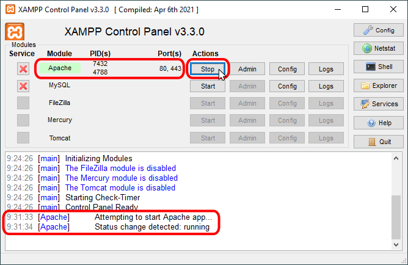
Ejecutar el panel de control como administrador
En algunas situaciones es necesario ejecutar el panel de control como administrador, por ejemplo, para configurar los servidores como servicios o deshabilitarlos.
Para ejecutar el panel de control como administrador, hay que hacer clic derecho sobre el icono de acceso directo (Inicio > XAMPP Control Panel > y elegir la opción "Más > Ejecutar como administrador".

Instalar los servidores como servicios
Si queremos instalar un servidor como servicio, es decir, que se ponga en marcha cada vez que arrancamos el ordenador, hay que marcar la casilla Service correspondiente. Para ello, es necesario iniciar XAMP como administrador.
Iniciando XAMPP como administrador, las casillas de la columna Service muestran el estado de los servicios:

Para instalar un servicio, haga clic en la casilla Service correspondiente:
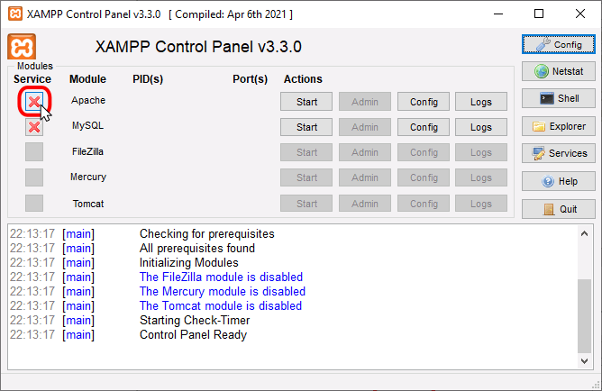
Se mostrará una ventana de confirmación. Para instalar el servicio, haga clic en Yes:

Si el servicio se instala correctamente, se indicará en el panel inferior y se mostrará una marca verde en la columna Service:
Al reiniciar el ordenador, tanto si se hace como administrador como si no, el panel de control de XAMPP indica los servicios arrancados. La columna Service sólo mostrará los iconos si se ha iniciado como administrador.
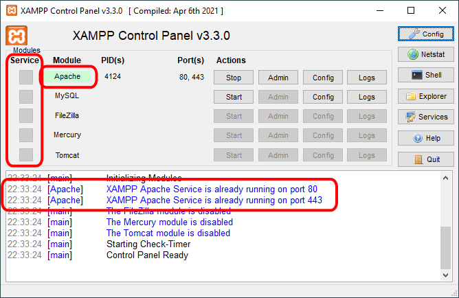

Si queremos desinstalar un servidor como servicio, es decir, que no se ponga en marcha cada vez que arrancamos el ordenador, hay que desmarcar la casilla Service correspondiente. Para ello, es necesario iniciar XAMP como administrador.
Para eliminar un servicio, haga clic en la casilla Service correspondiente:
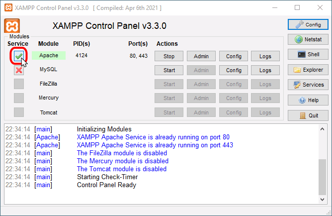
Se mostrará una ventana de aviso, que indica que para desinstalar un servicio, antes debe deternerse el servidor. Haga clic en OK para continuar:

Detenga el servidor haciendo clic en el botón Stop correspondiente:
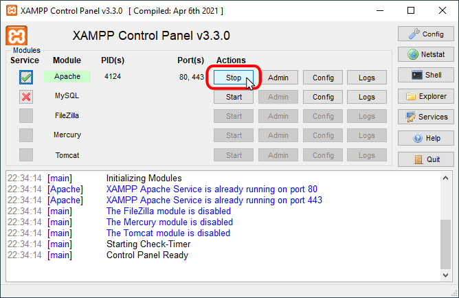
Una vez detenido el servidor, haga clic en la casilla Service correspondiente:
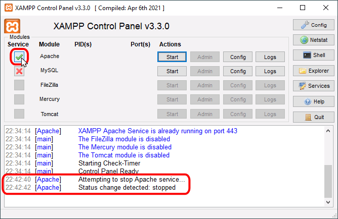
Se mostrará una ventana de confirmación. Para deinstalar el servicio, haga clic en Yes:
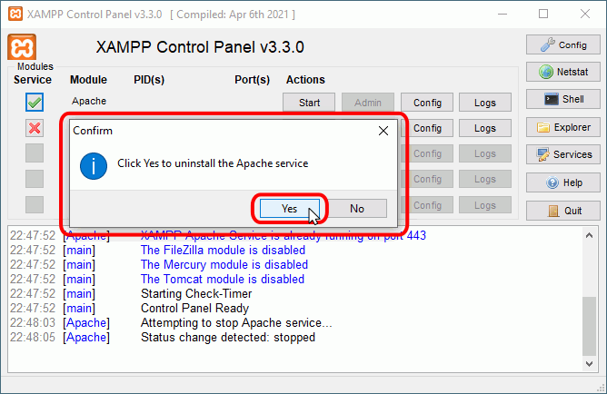
Si el servicio se desinstala correctamente, se indicará en el panel inferior y se mostrará una marca roja en la columna Service:
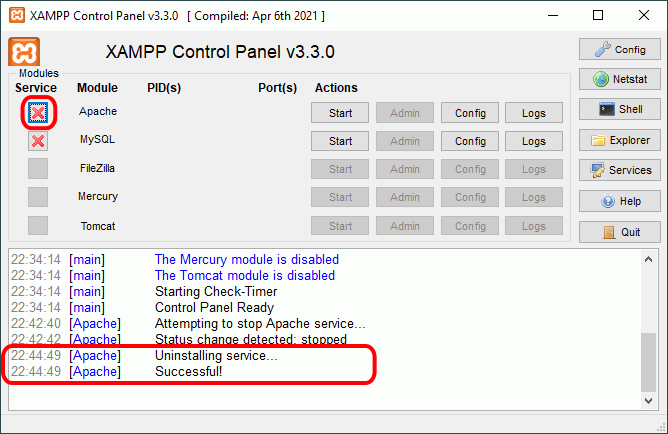